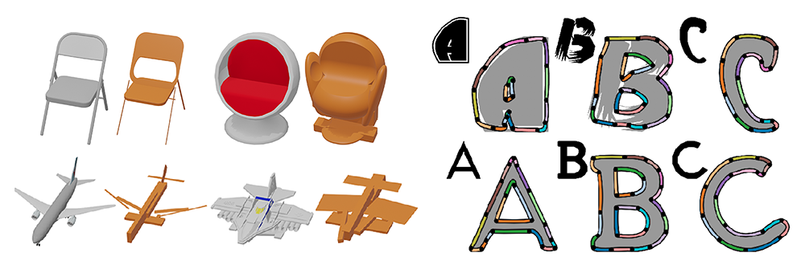
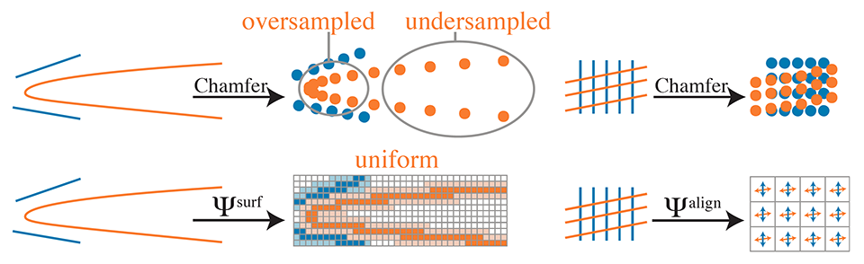
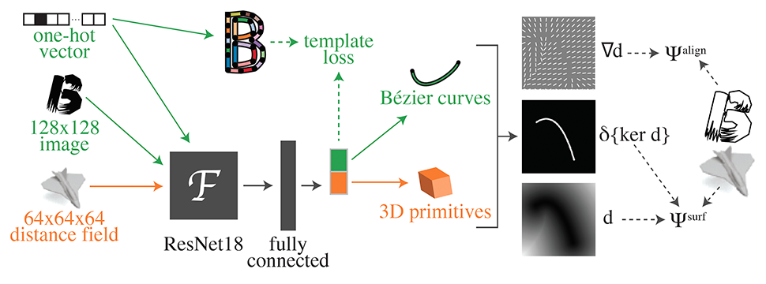

Deep Parametric Shape Predictions using Distance Fields

Abstract
Many tasks in graphics and vision demand machinery for converting shapes into consistent representations with sparse sets of parameters; these representations facilitate rendering, editing, and storage. When the source data is noisy or ambiguous, however, artists and engineers often manually construct such representations, a tedious and potentially time-consuming process. While advances in deep learning have been successfully applied to noisy geometric data, the task of generating parametric shapes has so far been difficult for these methods. Hence, we propose a new framework for predicting parametric shape primitives using deep learning. We use distance fields to transition between shape parameters like control points and input data on a pixel grid. We demonstrate efficacy on 2D and 3D tasks, including font vectorization and surface abstraction.
Method

Drawbacks of Chamfer distance (above) are fixed by our losses (below). On the left, sampling uniformly in the parameter space of a Bézier curve (orange) yields oversampling at the high-curvature area, resulting in a low Chamfer distance to the segments (blue). Our method yields a spatially uniform representation. On the right, two sets of nearly-orthogonal line segments have near-zero Chamfer distance despite misaligned normals. We explicitly measure normal alignment.

Our font vectorization pipeline is illustrated in green, and our 3D shape abstraction pipeline is in orange.
Video
Paper and supplementary material
D. Smirnov, M. Fisher, V. G. Kim, R. Zhang, J. Solomon
Deep Parametric Shape Predictions using Distance Fields
Conference on Computer Vision and Pattern Recognition (CVPR) 2020, virtual
Paper | BibTeX
@inproceedings{smirnov2020dps,
title={Deep Parametric Shape Predictions using Distance Fields},
author={Smirnov, Dmitriy and Fisher, Matthew and Kim, Vladimir G. and Zhang, Richard and Solomon, Justin},
year={2020},
booktitle={Proceedings of the IEEE/CVF Conference on Computer Vision and Pattern Recognition (CVPR)}
}
Poster
Acknowledgements
The authors acknowledge the generous support of Army Research Office grant W911NF1710068, Air Force Office of Scientific Research award FA9550-19-1-031, of National Science Foundation grant IIS-1838071, National Science Foundation Graduate Research Fellowship under Grant No. 1122374, from an Amazon Research Award, from the MIT-IBM Watson AI Laboratory, from the Toyota-CSAIL Joint Research Center, from a gift from Adobe Systems, and from the Skoltech-MIT Next Generation Program.